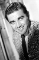

Country:United States, 93 minutes
Spoken languages:
Genres:Western
Director(s):Sam Peckinpah
Writer(s):Albert Sidney Fleischman, Albert Sidney Fleischman
Video Codec:Unknown
Number: 1441


Certification:PG-13
Storyline:
Ex-army officer accidentally kills a woman's son, tries to make up for it by escorting the funeral procession through dangerous Indian territory.
Cast: 


Medium: Original DVD,
Comments: Part of: Leading Ladies - Classic 20 Movie Collection
Loaned: No
Aspect ratio: Unknown